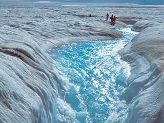
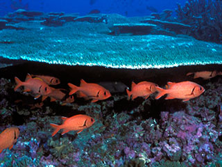

How To ACT?
Why should we use cotton bag?
Between 4.8 and 12.7 million tonnes of plastic enter the ocean each year, according to figures published in the journal Science in 2015. Plastic can enter the ocean as large, identifiable items or as microplastics - pieces under five millimetres in length.
Why is tap water better?
Dr. B: “Drinking filtered water instead of bottled water is good for our environment because of the harmful nature of plastic bottles* (made from petroleum products) and the energy used to make and transport these bottles.”
Why are BIO products important?
Using any cleaning product means accepting a certain environmental impact. Bio-based cleaning products are not automatically more environmentally friendly, but product labels help you to find a product which is more environmentally friendly than the average conventional product.
Why is public transportation important?
Public transportation also helps to reduce road congestion and travel times, air pollution, and energy and oil consumption, all of which benefit both riders and non-riders alike.
Millions of plastic bottles end up in the ocean every year
People across Europe died of heat-related causes
Total percent of plastic recycled
people die each year from causes directly attributable to air pollution
The evidence for rapid climate change is compelling:
Global Temperature Rise

The planet's average surface temperature has risen about 1.62 degrees Fahrenheit (0.9 degrees Celsius) since the late 19th century, a change driven largely by increased carbon dioxide and other human-made emissions into the atmosphere.4 Most of the warming occurred in the past 35 years, with the five warmest years on record taking place since 2010..
Warming Oceans

The oceans have absorbed much of this increased heat, with the top 700 meters (about 2,300 feet) of ocean showing warming of more than 0.4 degrees Fahrenheit since 1969.
Shrinking Ice Sheets
The Greenland and Antarctic ice sheets have decreased in mass. Data from NASA's Gravity Recovery and Climate Experiment show Greenland lost an average of 286 billion tons of ice per year between 1993 and 2016, while Antarctica lost about 127 billion tons of ice per year during the same time period. The rate of Antarctica ice mass loss has tripled in the last decade.7
Decreased Snow Cover

Satellite observations reveal that the amount of spring snow cover in the Northern Hemisphere has decreased over the past five decades and that the snow is melting earlier.
Sea Level Rise

Global sea level rose about 8 inches in the last century. The rate in the last two decades, however, is nearly double that of the last century and is accelerating slightly every year.10 Image: Republic of Maldives: Vulnerable to sea level rise
Declining Arctic Sea Ice
Both the extent and thickness of Arctic sea ice has declined rapidly over the last several decades.11 Image: Visualization of the 2012 Arctic sea ice minimum, the lowest on record
Extreme Events
The number of record high temperature events in the United States has been increasing, while the number of record low temperature events has been decreasing, since 1950. The U.S. has also witnessed increasing numbers of intense rainfall events.
Ocean Acidification
Since the beginning of the Industrial Revolution, the acidity of surface ocean waters has increased by about 30 percent.13,14 This increase is the result of humans emitting more carbon dioxide into the atmosphere and hence more being absorbed into the oceans. The amount of carbon dioxide absorbed by the upper layer of the oceans is increasing by about 2 billion tons per year.